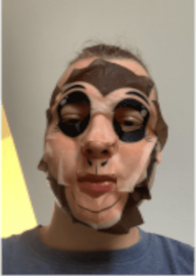

Urodzony 16 kwietnia 2002 roku w Pilonie.

Dominik robiący cosplay Wukonga
Życiorys
Jan od najmłodszych lat był znany społeczności Pilony, swoją kariere zaczął od grania w piłkę nożną na boisku w Pilonie.
Szybko okazało się że Jan jest wybitnym piłkarzem, więc wkrótce po tych wydarzeniach stary zapisał go do drużyny piłkarskiej Concordii Elbląg.
Jasiu niejednokrotnie opowiadał swoje boiskowe historie, jednak po złamaniu nogi podczas sławnego starcia okazało się, że
Jan choruje na astmę, i w Concordii podawał wodę a nie grał w piłkę. Jasiu pozostał przy grze na pilońskim boisku. To właśnie w tym okresie zaczął
interesować się grami komputerowymi min. Leauge of Legends, w które tak swoją drogą mimo przegranych
grubo ponad 1000 godzin jest ekstremalnie chujowy. W 2021 ukończył szkołe podstawową i zaczął uczyć się w technikum mechanicznym w Elblągu.
Jasia hobby jest pomaganie staremu przy szkółce iglaków, gdzie rosną najlepsze jakościowo choinki.
Osiągnięcia
Pobił rekord i jest prawdopodobnie najmłodszą najebaną osobą jaka pochodzi z Pilony
Ma na swoim koncie rekord wkurwionych swoją osobą ludzi